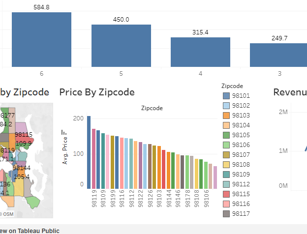
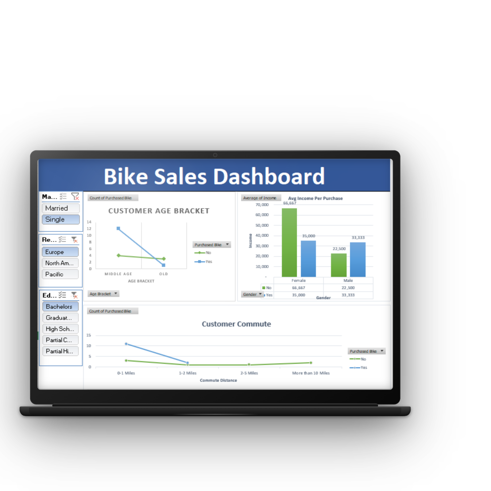
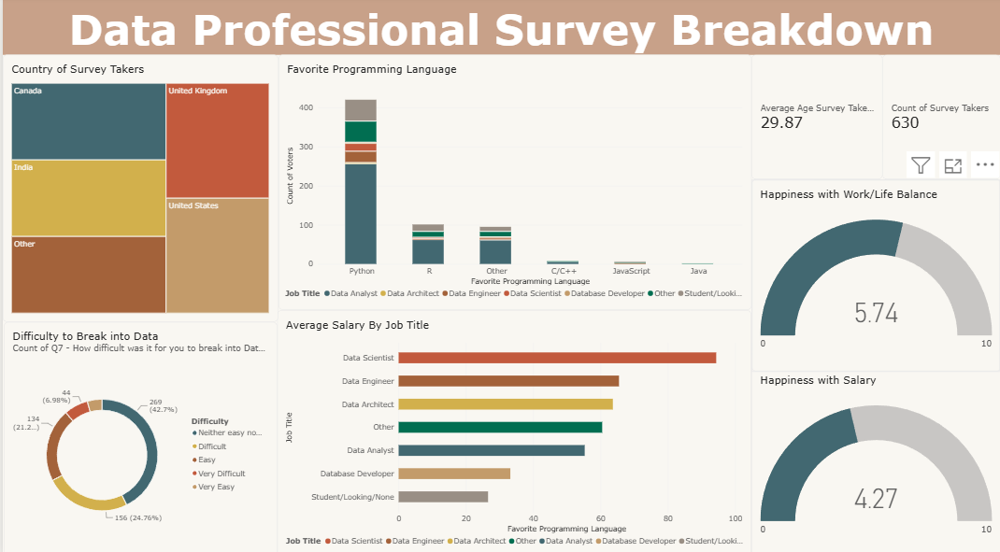
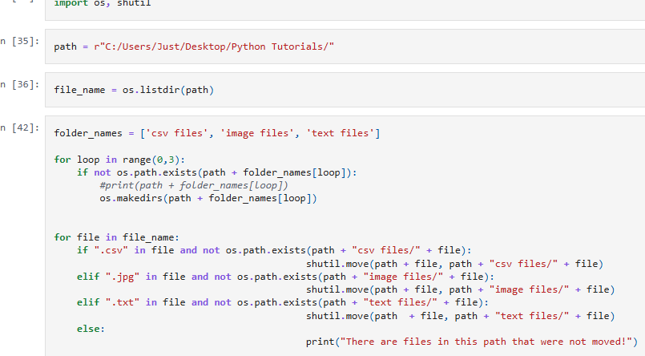

01
Business Analysis
Analyze business requirements, document processes, and identify practical system solutions.
Hi, I'm
I bridge business, data, and technology to solve problems, improve processes, and build practical digital solutions that create meaningful impact.
I am a Computer Science graduate with a strong foundation in technology, problem-solving, and analytical thinking. I enjoy understanding real-world problems, improving processes, working with data, and creating practical digital solutions.
I am continuously expanding my knowledge across business, data, and technology, while developing my skills in system analysis, web development, data analytics, and technical problem-solving. My goal is to build efficient, user-focused solutions that create meaningful value for organizations and their users.
Analyze business requirements, document processes, and identify practical system solutions.
Design system workflows and database structures using modeling and design techniques.
Analyze, visualize, and organize data to generate insights and support data-driven decision-making.
Build practical software and responsive web applications using programming languages, web technologies, and database integration.
Apply foundational knowledge of computer systems, software, and basic networking.
A collection of projects demonstrating my skills in business analysis, system design, web development, and data analytics.

A web-based system that digitizes the clearance process of St. Clare College of Caloocan by enabling students, clearing offices, department heads, and administrators to manage clearance requests efficiently.

A free web-based classroom seating generator that helps teachers create fair, organized, and customizable seating arrangements in just a few clicks.

An interactive Tableau dashboard that explores Airbnb listings, pricing, availability, and other key factors to identify patterns and provide meaningful insights.

An Excel-based data analysis project focused on cleaning and organizing bike sales data, analyzing trends using pivot tables, and creating a dashboard to visualize sales performance and generate actionable insights.

An interactive Power BI dashboard that analyzes survey data from data professionals, highlighting insights across roles, salaries, programming languages, and other professional trends.

A Python-based automation tool that organizes files by automatically sorting them into folders based on their file types, making file management faster and more organized.

A web-based management system designed to streamline children's records, progress monitoring, assessments, and report management for childcare and development centers.
Currently under active development. Case study and live demo will be available upon completion.
I’m open to opportunities where I can apply my skills in business, data, and technology while continuing to learn and grow. Feel free to reach out to discuss potential opportunities or collaborations.